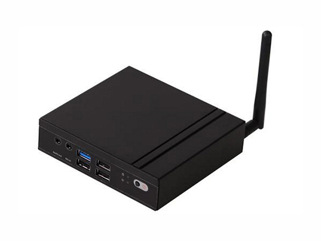
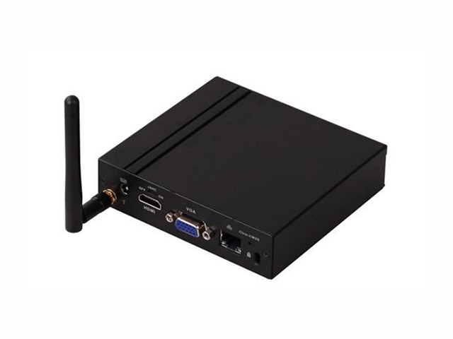

微型服务器
基于安全性的考虑，物联网有时是一个独立的网络系统，无法直接使用公有云服务，这样就需要在现场部署具有“处理”能力的硬件设备。
这里介绍一款微型服务器，它为独立网络提供虚拟云服务。
图片1
图片2
| 技术规格 | 参数说明 |
|---|---|
| CPU | 英特尔®赛扬®处理器N2807 1.58GHz~2.16GHz, 双核双线程 |
| 内存 | 2GB，DDR3L-1333MHz |
| 显示 | Integrated Intel® HD Graphics 2048 x 1280 @60Hz, VGA/HDMI |
| 音频 | Realtek ALC662-VD0 1xMIC-IN&SPDIF, 1x AUDIO OUT |
| 网卡 | Realtek 8111F Gigabit, Wake-on-LAN support |
| 接口 | 1xUSB 3.0, 3xUSB 2.0 |
| 其他功能 | 高可靠无人值守技术（JAHC） |
| 扩展 | 1 x full-size Mini-PCIe 1 x full/half-size Mini-PCIe |
| 存储 | mSATA |
| 操作系统 | Windows 7, Windows 8.1 Windows 10, Linux |
| 电源 | 5V 3A |
| 尺寸 | 116 x 106 x 30 mm |
| 工作温度 | 0-40℃ at 0.7m/s风量 |
| 存放温度 | -20~60℃ |
| 工作湿度 | 95%@40℃（无冷凝） |
| 标准认证 | CE/FCC Class B, CCC |